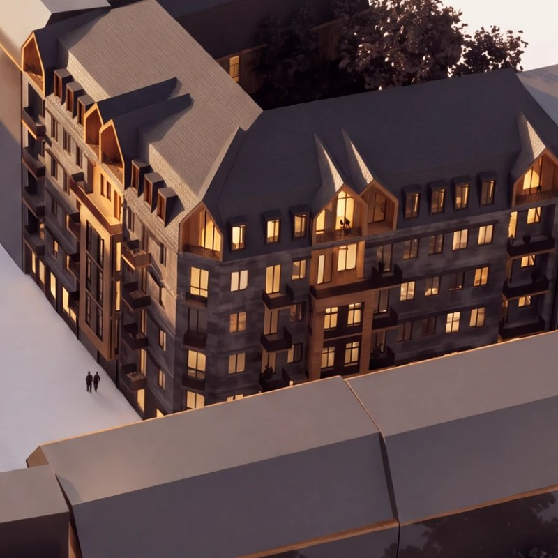
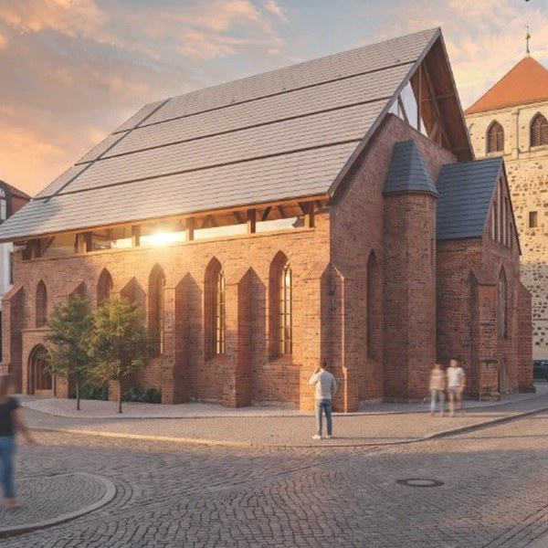

Introduction

 Priyati Golder
Priyati GolderFor me, architecture begins with people and place.
I see every project as a conversation between the people who will use a space, the character of its site, and the possibilities of material and light. Good architecture, I believe, does not need to shout; it quietly supports everyday life and is built to last.
I work across scales, from the detail of a joint to the shape of a neighbourhood, moving between sketches, drawings and models to test ideas. Research and close observation of context are part of how I design, not separate from it.
I value buildings that are honest in their construction, responsive to climate and culture, and open to change over time. This portfolio presents a selection of projects that reflect this way of thinking.
Selected Works
Contents
-
Image

0104Resilience & Renewal
Adaptive reuse of war-damaged buildings, Berlin
-
Image

0210Church Redesign
A sacred space, reimagined
-
Image
 0316
0316Heritage in the City
Integrating urban heritage into the city fabric
-
Image
 0422
0422Cultural Centre
A place for community, art and gathering
-
Image
 0528
0528Half-Timber Architecture
An analysis of timber-frame buildings in Germany